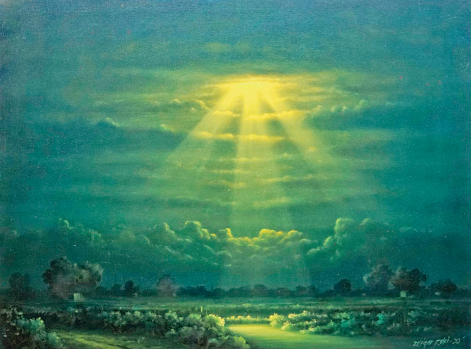

October 25, 2020
‘Everything in landscape painting must exude a sense of natural balance’
Pride of Performance award winner Zulfiqar Ali Zulfi’s latest art exhibition is running at ArtCiti Gallery until October 28
© Zulfiqar Ali Zulfi
If society hadn’t rejected him at every point, Pakistan would’ve lost a great artist to obscurity and not even known about its huge loss. “I probably would’ve lived and died in anonymity,” Zulfiqar Ali Zulfi told me in an interview.
Zulfi is renowned for his paintings of landscapes and cityscapes. His latest art exhibition, titled ‘Whispering Meadows’, opened on Thursday at the ArtCiti Gallery, where his works will be on display until October 28.
Since 1987, he has participated in solo and group exhibitions in Pakistan (Karachi, Lahore and Islamabad) as well as across the world (India, Jordan, the UAE, the UK and the USA).
On March 23, 2010, the then president of Pakistan had bestowed the Pride of Performance award on him in recognition of his distinguished merit in the field of arts.
Insatiable hunger
Hailing from a rural background in Punjab, the subject of Zulfi’s paintings has largely been landscapes. He has been painting landscapes and cityscapes all his life, never feeling the urge to turn his hand to other forms of art.
He said that every new artist starts to learn painting with landscapes, from where they move on to other avenues, but “my hunger for painting landscapes and cityscapes is as yet insatiable”.
He pointed out that landscape painting is considered the common man’s art form, but warned against taking this form of art lightly, because it’s quite difficult to master.
“Just like classical music has its own set of rules that you have to follow and can’t diverge from, so does landscape painting require that you follow every single rule, because it’s a classical art form.”
He remarked that there’s no room for mistakes in landscape painting, because it’s mandatory for everything in it to exude a sense of natural balance. “And since this form of art is so close to reality, even a little mistake can stand out and destroy the overall effect of the entire painting.”
‘In my blood’
Zulfi said that when the abstract art and modern art movements reached Pakistan, every local artist tried their hand at them, but only some of them stuck with either of the art forms.
As for all the other artists, he said they stopped after a few paintings and redirected their attention to other forms of art or the one they had been engaged in before they’d taken a break for experimenting.
But none of the other art forms holds any interest for Zulfi. “There’s no purity in the baroque. Of course, you can master the art form or any other, for that matter, with constant practice.”
Since he’s from Punjab, the culture and traditions of the province are in his blood. So, like everyone else, what’s in his blood makes his interests particular and guides him down his path in life.
And like everyone else in any field of art, he considers all the past artists his mentors. He has followed all of the masters that have come before him and learned anything and everything he could from those classical painters.
Details breed feelings
Just like accomplished actors conduct an in-depth study of the characters they’re playing to mimic every trait and peculiarity, and thus translate their observations into a near likeness of the character they are portraying, all of Zulfi’s observations are rooted in his rural background and evident in his paintings.
He said that none of those born and bred in a city can match someone from a rural background in their observations of the countryside.
“And it’s these details that evoke feelings in the viewer when they observe a landscape painting. If you remove even some of the minute details from such a work of art, the viewer would be robbed of an important experience.”
He said that what one feels when they view a landscape painting, the feeling of being there and experiencing everything in it, comes from the details that the artist has put such hard work into to get them right.
The big payoff
Zulfi has been painting since his early years, with each of his days filled with playing with colours. But since he had been painting since childhood, he hadn’t really considered doing it professionally.
He wanted to become an officer or hold some other prestigious position, but no one ever seemed too interested in hiring him. After all these rejections, he found that he had no other option left but to turn his hobby into his profession.
Painting was the one thing everybody could easily accept he was actually good at. And with a years-long experience of it, all of his hard work started paying off. And it keeps on giving to him as well as to everyone else who loves art.
First published in The News International